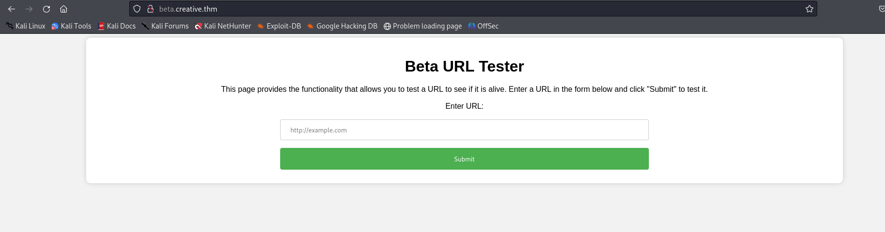

Open ports:
http://creative.thm/?contact-message=tytytytytyyt+kdlkfj#contact
I checked some commong things, but did not found anything interesting. A good move from here is using ffuf.
I looked for some pathes with this command:
ffuf -w /usr/share/wordlists/seclists/Discovery/Web-Content/common.txt -u http://creative.thm/FUZZ -c -t 300
Subdomain enumeration with ffuf:
ffuf -w /usr/share/wordlists/seclists/Discovery/DNS/bitquark-subdomains-top100000.txt -H "Host: FUZZ.creative.thm" -u http://creative.thm -c -fs 178 -t 300
Add blog.creative.thm to /etc/hosts with the same IP.

When we put there a url it just tries to show the page.
So now I am going to make a python script that will scan open ports that could be not open to public, but I might access them through the form.
We found 1337 port to be open.
password for id_rsa: sweetness
echo "saad:MyStrongestPasswordYet$4291" > creds.txt
LD_PRELOAD
Use this article: https://www.hackingarticles.in/linux-privilege-escalation-using-ld_preload/
use ping instead of find.